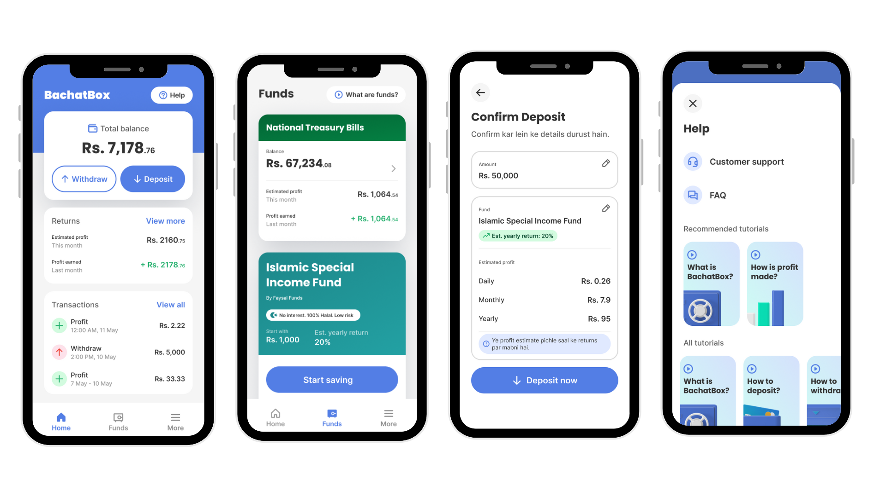
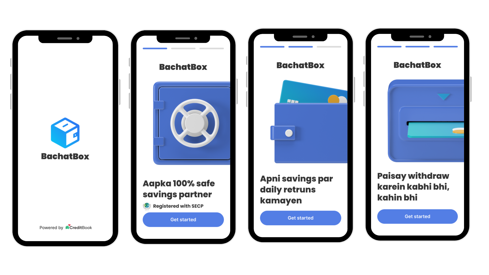
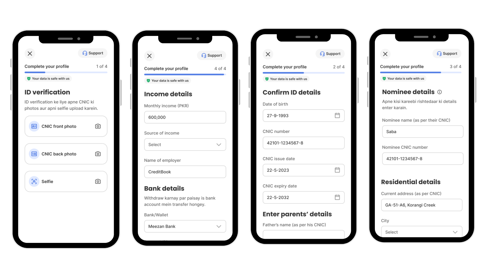

BachatBox: Designing for Trust

Context
By early 2024, CreditBook's free ledger had a pattern we hadn't designed for: women running small businesses were logging personal savings goals — gold, weddings, land — inside an app built purely to track customer credit. Pakistan has one of the lowest savings rates in the region: only 2.4% of people above 15 save actively with a financial institution, and 128 million women lack access to an active bank account at all, despite 73% of surveyed female entrepreneurs naming savings as their primary source of business capital. BachatBox was our bet that a dedicated, trust-first savings and investment product could close part of that gap.
Research
We surveyed over 500 women directly. 70% said they were uncomfortable going to a bank branch at all. 40% saved through informal committees, 20% through gold, 10% through national savings schemes, and 20% weren't saving at the time we asked — nearly half said their financial goals were on hold until they had more savings. The sample skewed toward business owners (35%), employed women (30%), and homemakers (25%), which shaped who we designed for first.


Design principles
Four principles anchored the build, straight from the research: freedom of choice & privacy (multiple savings options, zero branch visits, women-specific product structuring); financial control (eKYC in under 5 minutes vs. roughly 3 days conventionally, goal-based savings); flexibility (deposit or withdraw immediately, tickets as low as Rs. 500); and financial education (in-app content built for low financial literacy, not around it).
Personas
Mehr, 39, a business owner and mother who started her cafe on gold sales and a friends-and-family loan — tech-savvy but wary of gold-price volatility and structuring loan repayments. Maryam, 24, a social media marketer in a joint family who has only ever saved through informal committees, confident with technology but new to any formal savings tool. Both shaped which onboarding frictions we chose to spend effort removing first.
Traction & roadmap
In the first months of the MVP, women made up 30% of depositors despite the product having just launched, with 35+ users making repeat deposits — an early signal that goal-based saving, not just the discount of a first deposit, was pulling people back in. The roadmap built on that: onboard 20,000 female users, get onboarding under 5 minutes using OCR and NADRA API verification, and ship 3+ customizable financial products, phased across the year following the FIWC grant.